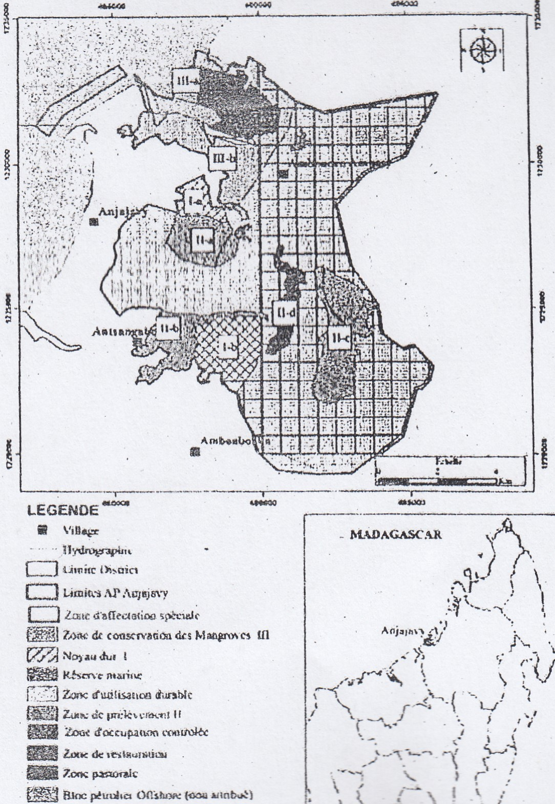
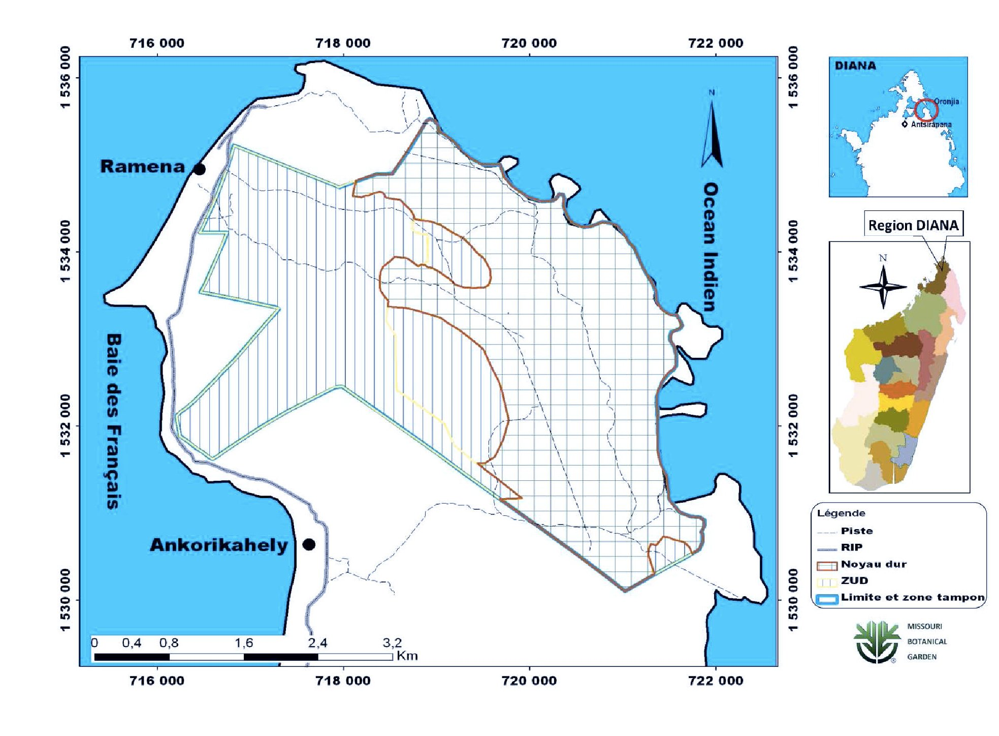
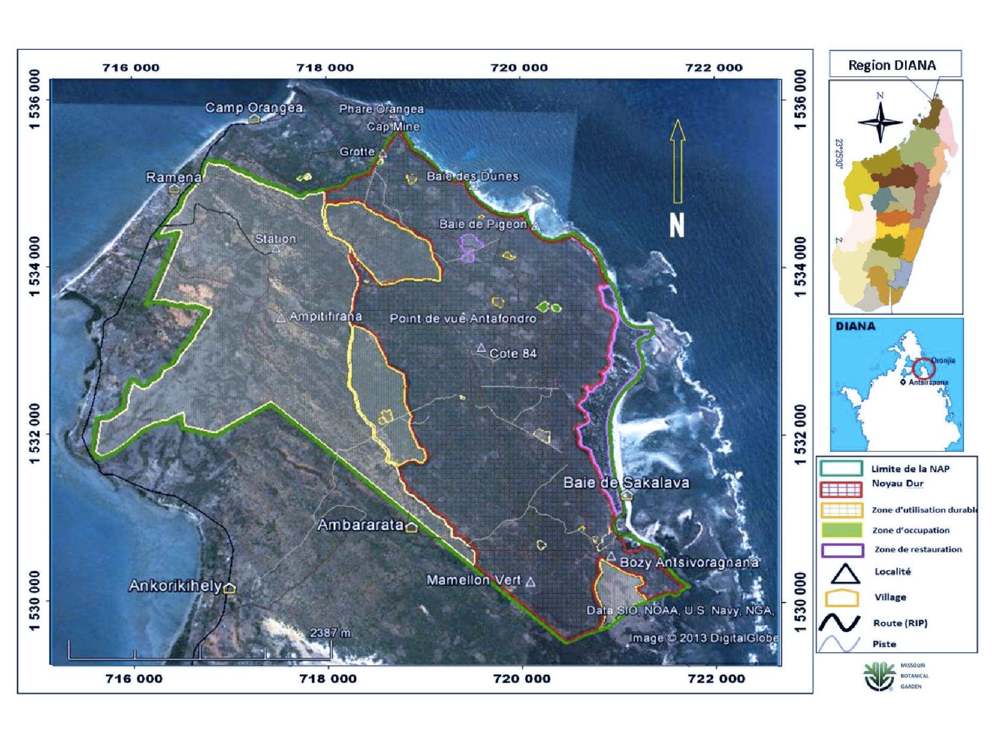
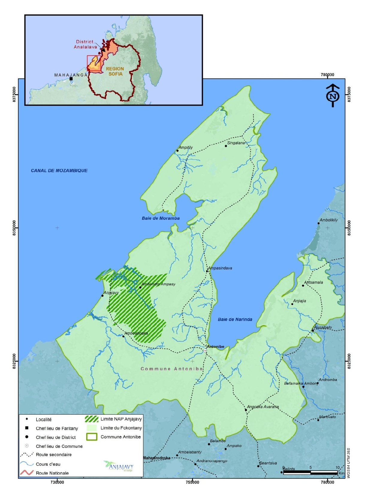
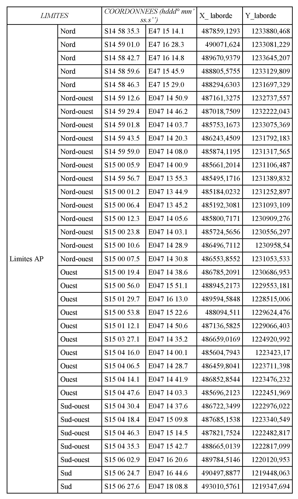
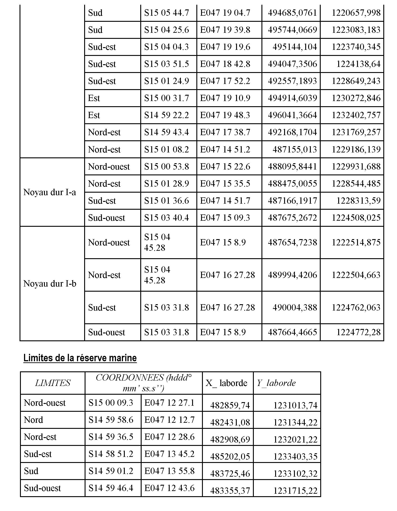
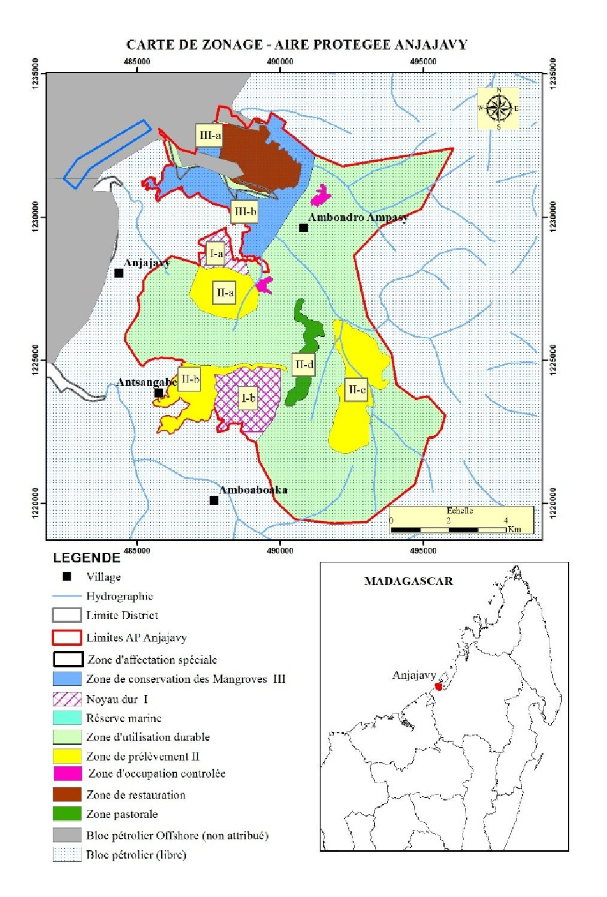
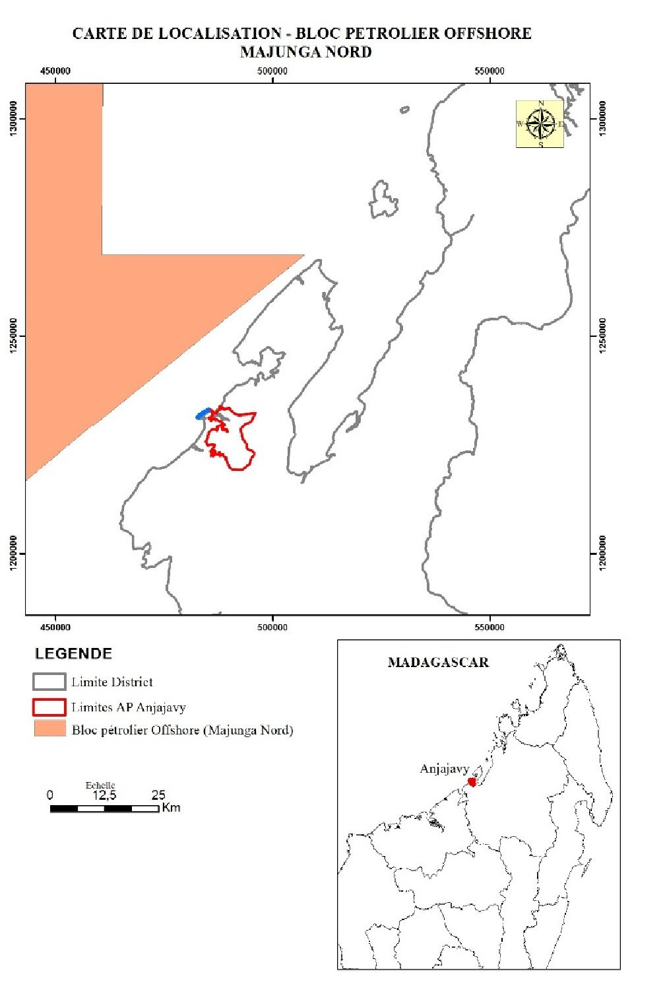
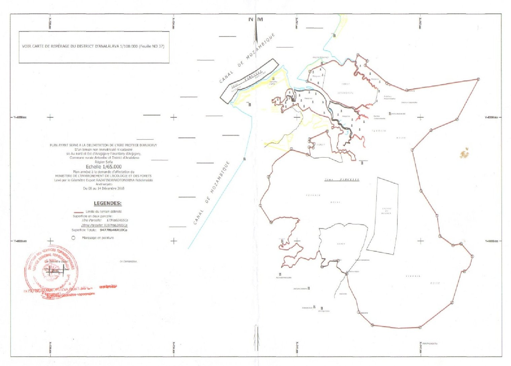

| DATE(S) | DATE TEXTES | TEXTE(S) | TYPE | NUM TEXTE | NUM | OBJET | OBJET MG | NUM JO | DATE JO | DATE JO FR | PAGE JO | ETAT | NOTE(S) | NOTES MG | DOC PDF FR | DOC PDF MG | MINISTERE(S) | id | HTML FR | HTML MG | ||||||||||||||||||||||||||||||||||||||||||||||||||||||||||||||||||||||||||||||||||||||||||||||||||||||||||||||||||||||||||||||||||||||||||||||||||||||||||||||||||||||||||||||||||||||||||||||||||||||||||||||||||||||||||||||||||||||||||||||||||||||||||||||||||||||||||||||||||||||||||||||||||||||||||||||||||||||||||||||||||||||||||||||||||||||||||||||||||||||||||||||||||||||||||||||||||||||||||||||||||||||||||||||||||||||||||||||||||||||||||||||||||||||||||||||||||||||||||||||||||||||||||||||||||||||
|---|---|---|---|---|---|---|---|---|---|---|---|---|---|---|---|---|---|---|---|---|---|---|---|---|---|---|---|---|---|---|---|---|---|---|---|---|---|---|---|---|---|---|---|---|---|---|---|---|---|---|---|---|---|---|---|---|---|---|---|---|---|---|---|---|---|---|---|---|---|---|---|---|---|---|---|---|---|---|---|---|---|---|---|---|---|---|---|---|---|---|---|---|---|---|---|---|---|---|---|---|---|---|---|---|---|---|---|---|---|---|---|---|---|---|---|---|---|---|---|---|---|---|---|---|---|---|---|---|---|---|---|---|---|---|---|---|---|---|---|---|---|---|---|---|---|---|---|---|---|---|---|---|---|---|---|---|---|---|---|---|---|---|---|---|---|---|---|---|---|---|---|---|---|---|---|---|---|---|---|---|---|---|---|---|---|---|---|---|---|---|---|---|---|---|---|---|---|---|---|---|---|---|---|---|---|---|---|---|---|---|---|---|---|---|---|---|---|---|---|---|---|---|---|---|---|---|---|---|---|---|---|---|---|---|---|---|---|---|---|---|---|---|---|---|---|---|---|---|---|---|---|---|---|---|---|---|---|---|---|---|---|---|---|---|---|---|---|---|---|---|---|---|---|---|---|---|---|---|---|---|---|---|---|---|---|---|---|---|---|---|---|---|---|---|---|---|---|---|---|---|---|---|---|---|---|---|---|---|---|---|---|---|---|---|---|---|---|---|---|---|---|---|---|---|---|---|---|---|---|---|---|---|---|---|---|---|---|---|---|---|---|---|---|---|---|---|---|---|---|---|---|---|---|---|---|---|---|---|---|---|---|---|---|---|---|---|---|---|---|---|---|---|---|---|---|---|---|---|---|---|---|---|---|---|---|---|---|---|---|---|---|---|---|---|---|---|---|---|---|---|---|---|---|---|---|---|---|---|---|---|---|---|---|---|---|---|---|---|---|---|---|---|---|---|---|---|---|---|---|---|---|---|---|---|---|---|---|---|---|---|---|---|---|---|---|---|---|---|---|---|---|---|---|---|---|---|---|---|---|---|---|---|---|---|---|---|---|---|---|---|---|---|---|---|---|---|---|---|---|---|---|---|---|---|---|---|---|---|---|---|---|---|---|---|---|---|---|---|---|---|---|---|---|---|---|---|---|---|---|---|---|---|---|---|---|---|---|---|---|---|---|---|
| 03 Juin 2024 | 03-06-2024 | Décret n° 2024-1244 Abrogeant les décrets n° 2020-1052 du 26 août 2020 et n° 2022-1453 du 12 octobre 2022 et portant nomination du Directeur des Aires Protégées, des Ressources Naturelles renouvelables et des Ecosystèmes auprès du Ministère de l'Environnement et du Développement Durable. Madame RATEFASON Zafindragisimary Tojotsara ETAT : En vigueur Voir le texte (VF) | Décret | 2024-1244 | D2024-1244 | Abrogeant les décrets n° 2020-1052 du 26 août 2020 et n° 2022-1453 du 12 octobre 2022 et portant nomination du Directeur des Aires Protégées, des Ressources Naturelles renouvelables et des Ecosystèmes auprès du Ministère de l'Environnement et du Développement Durable. Madame RATEFASON Zafindragisimary Tojotsara | VOIR_JO | 13 Juin 2024 | 13-06-2024 | 0 | En vigueur |
| undefined | MINISTERE DE L'ENVIRONNEMENT ET DU DEVELOPPEMENT DURABLE (MEDD) | 54825 |
MINISTERE DE L’ENVIRONNEMENT ET DU DEVELOPPEMENT DURABLE -------------------- DECRET n° 2024-1244 Abrogeant les décrets n° 2020-1052 du 26 août 2020 et n° 2022-1453 du 12 octobre 2022 et portant nomination du Directeur des Aires Protégées, des Ressources Naturelles renouvelables et des Ecosystèmes auprès du Ministère de l'Environnement et du Développement Durable. Madame RATEFASON Zafindragisimary Tojotsara LE PRESIDENT DE LA REPUBLIQUE,
| ||||||||||||||||||||||||||||||||||||||||||||||||||||||||||||||||||||||||||||||||||||||||||||||||||||||||||||||||||||||||||||||||||||||||||||||||||||||||||||||||||||||||||||||||||||||||||||||||||||||||||||||||||||||||||||||||||||||||||||||||||||||||||||||||||||||||||||||||||||||||||||||||||||||||||||||||||||||||||||||||||||||||||||||||||||||||||||||||||||||||||||||||||||||||||||||||||||||||||||||||||||||||||||||||||||||||||||||||||||||||||||||||||||||||||||||||||||||||||||||||||||||||||||||||||||||||||
| 12 Octobre 2022 | 12-10-2022 | Décret n° 2022-1453 Abrogeant le décret n° 2020-709 du 01 juillet 2020 et portant nomination du Directeur des Aires Protégées, des Ressources Naturelles renouvelables et des Ecosystèmes auprès du Ministère de l’Environnement et du Développement Durable. Monsieur BAKARIZAFY Jean Hervé ETAT : Abrogé Voir le texte (VF) Voir le texte (VM) | Décret | 2022-1453 | D2022-1453 | Abrogeant le décret n° 2020-709 du 01 juillet 2020 et portant nomination du Directeur des Aires Protégées, des Ressources Naturelles renouvelables et des Ecosystèmes auprès du Ministère de l’Environnement et du Développement Durable. Monsieur BAKARIZAFY Jean Hervé | Manafoana ny Didim-panjakana laharana faha 2020-709 tamin’ny 01 jolay 2020 sy anendrena ny Talen’ny Faritra Arovana, ny Loharanon-karena Voajanahary azo havaozina ary ny Rohivoahary eo anivon’ny Ministeran’ny Tontolo Iainana sy ny Fandrosoana Lovain-jafy. (Andriamatoa BAKARIZAFY Jean Hervé) | VOIR_JO | 12 Octobre 2022 | 12-10-2022 | 0 | Abrogé |
| undefined | MINISTERE DE L'ENVIRONNEMENT ET DU DEVELOPPEMENT DURABLE (MEDD) | 51655 |
MINISTERE DE L’ENVIRONNEMENT ET DU DEVELOPPEMENT DURABLE -------------------------------- DECRET N° 2022-1453 abrogeant le décret n° 2020-709 du 01 juillet 2020 et portant nomination du Directeur des Aires Protégées, des Ressources Naturelles renouvelables et des Ecosystèmes auprès du Ministère de l’Environnement et du Développement Durable. Monsieur BAKARIZAFY Jean Hervé LE PRESIDENT DE LA REPUBLIQUE,
|
MINISITERAN’NY TONTOLO IAINANA SY NY FANDROSOANA LOVAIN-JAFY Didim-panjakana laharana faha 2022-1453 Manafoana ny Didim-panjakana laharana faha 2020-709 tamin’ny 01 jolay 2020 sy anendrena ny Talen’ny Faritra Arovana, ny Loharanon-karena Voajanahary azo havaozina ary ny Rohivoahary eo anivon’ny Ministeran’ny Tontolo Iainana sy ny Fandrosoana Lovain-jafy. (Andriamatoa BAKARIZAFY Jean Hervé) NY FILOHAM-PIRENENA,
| ||||||||||||||||||||||||||||||||||||||||||||||||||||||||||||||||||||||||||||||||||||||||||||||||||||||||||||||||||||||||||||||||||||||||||||||||||||||||||||||||||||||||||||||||||||||||||||||||||||||||||||||||||||||||||||||||||||||||||||||||||||||||||||||||||||||||||||||||||||||||||||||||||||||||||||||||||||||||||||||||||||||||||||||||||||||||||||||||||||||||||||||||||||||||||||||||||||||||||||||||||||||||||||||||||||||||||||||||||||||||||||||||||||||||||||||||||||||||||||||||||||||||||||||||||||||||
| 15 Septembre 2021 | 15-09-2021 | Décret n° 2021-919 Portant création définitive de l’Aire Protégée dénommée « Ankafobe » Commune Urbaine d’Ankazobe District d’Ankazobe, Région Analamanga. ETAT : En vigueur Voir le texte (VF) | Décret | 2021-919 | D2021-919 | Portant création définitive de l’Aire Protégée dénommée « Ankafobe » Commune Urbaine d’Ankazobe District d’Ankazobe, Région Analamanga. | VOIR_J.O | 15 Septembre 2021 | 15-09-2021 | 0 | En vigueur | undefined | MINISTERE DE L'ENVIRONNEMENT ET DU DEVELOPPEMENT DURABLE (MEDD) | 50735 | REPOBLIKAN ' I MADAGASIKARA Fitiavana-Tanindrazana-Fandrosoana -------------------- MINISTERE DE L’ENVIRONNEMENT ET DU DEVELOPPEMENT DURABLE ------------------------------- DECRET N°2021-919 Portant création définitive de l’Aire Protégée dénommée « Ankafobe » Commune Urbaine d’Ankazobe District d’Ankazobe, Région Analamanga LE PREMIER MINISTRE, CHEF DU GOUVERNEMENT, | |||||||||||||||||||||||||||||||||||||||||||||||||||||||||||||||||||||||||||||||||||||||||||||||||||||||||||||||||||||||||||||||||||||||||||||||||||||||||||||||||||||||||||||||||||||||||||||||||||||||||||||||||||||||||||||||||||||||||||||||||||||||||||||||||||||||||||||||||||||||||||||||||||||||||||||||||||||||||||||||||||||||||||||||||||||||||||||||||||||||||||||||||||||||||||||||||||||||||||||||||||||||||||||||||||||||||||||||||||||||||||||||||||||||||||||||||||||||||||||||||||||||||||||||||||||||||||
| 01 Juillet 2020 | 01-07-2020 | Décret n° 2020-709 Abrogeant le décret n° 2019-883 du 24 avril 2019 et portant nomination du Directeur des Aires Protégées, des Ressources Naturelles Renouvelables et des Ecosystèmes auprès du Ministère de l’Environnement et du Développement Durable. Monsieur RAZAFINDRABE Rinah N° J.O: 3965 Date J.O: 27 Juillet 2020 Page J.O: 4308ETAT : Abrogé Voir le texte (VF) | Décret | 2020-709 | D2020-709 | Abrogeant le décret n° 2019-883 du 24 avril 2019 et portant nomination du Directeur des Aires Protégées, des Ressources Naturelles Renouvelables et des Ecosystèmes auprès du Ministère de l’Environnement et du Développement Durable. Monsieur RAZAFINDRABE Rinah | 3965 | 27 Juillet 2020 | 27-07-2020 | 4308 | Abrogé |
| undefined | MINISTERE DE L'ENVIRONNEMENT ET DU DEVELOPPEMENT DURABLE (MEDD) | 48532 |
MINISTERE DE L’ENVIRONNEMENT ET DU DEVELOPPEMENT DURABLE ----------------------- DECRET n° 2020-709 abrogeant le décret n° 2019-883 du 24 avril 2019 et portant nomination du Directeur des Aires Protégées, des Ressources Naturelles Renouvelables et des Ecosystèmes auprès du Ministère de l’Environnement et du Développement Durable. LE PRESIDENT DE LA REPUBLIQUE, Vu la Constitution, Vu la loi n° 94-025 du 17 novembre 1994 relative au Statut Général des Agents Non encadrés de l’Etat, Vu la loi n° 2003-011 du 03 septembre 2003 portant Statut Général des Fonctionnaires, Vu l’ordonnance n° 62-041 du 19 septembre 1962 relative aux dispositions générales de droit interne et de droit international privé, Vu l’ordonnance n° 93-027 du 13 mai 1993 relative à la réglementation sur les Hauts Emplois de l’Etat, Vu le décret n° 76-132 du 31 mars 1976, modifié et complété par les décrets n° 93-842 du 16 novembre 1993 et n° 2003-961 du 16 septembre 2003, portant réglementation des Hauts Emplois de l’Etat, Vu le décret n° 2019-1407 du 19 juillet 2019 portant nomination du Premier Ministre, Chef du Gouvernement, Vu le décret n° 2020-070 du 29 janvier 2020, modifié et complété par le décret n° 2020-597 du 04 Juin 2020, portant nomination des membres du Gouvernement, Vu le décret n° 2020-206 du 26 février 2020 fixant les attributions du Ministre de l’Environnement et du Développement Durable ainsi que l’Organisation Générale de son Ministère, Sur proposition du Ministre de l’Environnement et du Développement Durable, En Conseil des Ministres, DECRETE : Article premier. - Sont et demeurent abrogées les dispositions du décret n° 2019-883 du 24 avril 2019portant nomination du Directeur des Aires Protégées, des Ressources Naturelles renouvelables et des Ecosystèmesauprès du Ministère de l’Environnement et du Développement Durable. Article 2. -Est nommé Directeur des Aires Protégées, des Ressources Naturelles renouvelables et des Ecosystèmesauprès du Ministère de l’Environnement et du Développement Durable : Monsieur RAZAFINDRABE Rinah Article 3. - En raison de l’urgence, et conformément aux dispositions des articles 4 et 6 alinéa 2 de l’ordonnance n° 62-041 du 19 septembre 1962 susvisée, le présent décret entre immédiatement en vigueur dès sa publication par émission radiodiffusée ou télévisée, indépendamment de son insertion au Journal Officiel de la République. Article 4. - Le Ministre de l’Economie et des Finances, le Ministre du Travail, de l’Emploi, de la Fonction Publique et des Lois Sociales, le Ministre de l’Environnement et du Développement Durable, le Ministre de la Communication et de la Culture, sont chargés, chacun en ce qui le concerne, de l’exécution du présent décret qui sera publié au Journal Officiel de la République. Fait à Antananarivo, le 01 juillet 2020 Andry RAJOELINA Par Le Président de la République Le Premier Ministre, Chef du Gouvernement NTSAY Christian Le Ministre de l’Economie et des Finances Richard RANDRIAMANDRATO Le Ministre du Travail, de l’Emploi, de la Fonction Publique et des Lois Sociales Gisèle RANAMPY Le Ministre de l’Environnement et du Développement Durable Vahinala Baomiavotse RAHARINIRINA Le Ministre de la Communication et de la Culture Lalatiana ANDRIATONGARIVO RAKOTONDRAZAFY | ||||||||||||||||||||||||||||||||||||||||||||||||||||||||||||||||||||||||||||||||||||||||||||||||||||||||||||||||||||||||||||||||||||||||||||||||||||||||||||||||||||||||||||||||||||||||||||||||||||||||||||||||||||||||||||||||||||||||||||||||||||||||||||||||||||||||||||||||||||||||||||||||||||||||||||||||||||||||||||||||||||||||||||||||||||||||||||||||||||||||||||||||||||||||||||||||||||||||||||||||||||||||||||||||||||||||||||||||||||||||||||||||||||||||||||||||||||||||||||||||||||||||||||||||||||||||||
| 29 Janvier 2020 | 29-01-2020 | Arrêté n° 2645/2020 Portant mise en protection temporaire de l’Aire protégée en création dénommée «Ivohiboro, District d’Ivohibe, Région Ihorombe N° J.O: 3975 Date J.O: 05 Octobre 2020 Page J.O: 4757ETAT : En vigueur Voir le texte (VF) Voir le texte (VM) | Arrêté | 2645/2020 | A2645/2020 | Portant mise en protection temporaire de l’Aire protégée en création dénommée «Ivohiboro, District d’Ivohibe, Région Ihorombe | ametrahana ny fiarovana vonjimaika ny Faritra arovana eo an-dalam-pananganana antsoina hoe «Ivohiboro», Distrikan’Ivohibe, Faritra Ihorombe | 3975 | 05 Octobre 2020 | 05-10-2020 | 4757 | En vigueur | undefined | MINISTERE DE L'ENVIRONNEMENT ET DU DEVELOPPEMENT DURABLE (MEDD) | 51170 |
MINISTERE DE L’AMENAGEMENT DU TERRITOIRE, DE L’HABITAT ET DES TRAVAUX PUBLICS MINISTERE DES MINES ET DES RESSOURCES STRATEGIQUES MINISTERE DE L’ENVIRONNEMENT ET DE DEVELOPPEMENT DURABLE MINISTERE DE LA COMMUNICATION ET DE LA CULTURE ------------------------ Arrêté n° 2 645/2020 Portant mise en protection temporaire de l’Aire protégée en création dénommée «Ivohiboro, District d’Ivohibe, Région Ihorombe ATTESTATION ANNEXE |
MINISITERAN’ NY FANAJARIANA NY TANY, NY TOERAM- PONENANA ARY NY ASA VAVENTY MINISITERAN’ NY HARENA AN-KIBON’ NY TANY SY NY LOHARANON-KARENA STRATEJIKA MINISITERAN’ NY TONTOLO IAINANA SY NY FAMPANDROSOANA MAHARITRA MINISITERAN’ NY SERASERA SY NY KOLONTSAINA ----------------- Didim-pitondrana laharana faha-2 645/2020 ametrahana ny fiarovana vonjimaika ny Faritra arovana eo an-dalam-pananganana antsoina hoe «Ivohiboro», Distrikan’Ivohibe, Faritra Ihorombe | |||||||||||||||||||||||||||||||||||||||||||||||||||||||||||||||||||||||||||||||||||||||||||||||||||||||||||||||||||||||||||||||||||||||||||||||||||||||||||||||||||||||||||||||||||||||||||||||||||||||||||||||||||||||||||||||||||||||||||||||||||||||||||||||||||||||||||||||||||||||||||||||||||||||||||||||||||||||||||||||||||||||||||||||||||||||||||||||||||||||||||||||||||||||||||||||||||||||||||||||||||||||||||||||||||||||||||||||||||||||||||||||||||||||||||||||||||||||||||||||||||||||||||||||||||||||||
| 29 Janvier 2020 | 29-01-2020 | Arrêté n° 2644/2020 Portant mise en protection temporaire de l'Aire Protégée en création dénomée "Tsinjoarivo Ambalaomby", Region Vakin'Ankaratra, Alaotra Mangoro, Districts Ambatolampy, Anosibe an'Ala. N° J.O: 3979 Date J.O: 26 Octobre 2020 Page J.O: 4916ETAT : En vigueur Voir le texte (VF) Voir le texte (VM) | Arrêté | 2644/2020 | A2644/2020 | Portant mise en protection temporaire de l'Aire Protégée en création dénomée "Tsinjoarivo Ambalaomby", Region Vakin'Ankaratra, Alaotra Mangoro, Districts Ambatolampy, Anosibe an'Ala. | Ametrahana ny fiarovana vonjimaika ny Faritra arovana an-dalam-pananganana antsoina hoe " "Tsinjoarivo Ambalaomby", Faritra Vakin'Ankaratra, Alaotra Mangoro, Disitrika Ambatolampy, Anosibe an'Ala. | 3979 | 26 Octobre 2020 | 26-10-2020 | 4916 | En vigueur | undefined | MINISTERE DE L'INTERIEUR ET DE LA DECENTRALISATION (MID),MINISTERE DE L'AMENAGEMENT DU TERRITOIRE, DE L'HABITAT ET DES TRAVAUX PUBLICS (MATHTP),MINISTERE DE L'ENERGIE, DE L'EAU ET DES HYDROCARBURES (MEEH),MINISTERE DES MINES ET DES RESSOURCES STRATEGIQUES (MMRS),MINISTERE DE L'ENVIRONNEMENT ET DU DEVELOPPEMENT DURABLE (MEDD) | 52424 | REPOBLIKAN ' I MADAGASIKARA Fitiavana-Tanindrazana-Fandrosoana ----------------- MINISTERE DE L'INTERIEUR ET DE LA DECENTRALISATION ----------------- MINISTERE DE L’AMENAGEMENT DU TERRITOIRE, DE L'HABITAT ET DES TRAVAUX PUBLICS ----------------- MINISTERE DE L’ENERGIE,DE L’EAU ET DES HYDROCARBURES ----------------- MINISTERE DES MINESET DES RESSOURCES STRATEGIQUES ----------------- MINISTERE DE L’ENVIRONNEMENT ET DU DEVELOPPEMENT DURABLE ----------------- ARRETE N°2644/2020 Portant mise en protection temporaire de l'Aire Protégée en création dénomée "Tsinjoarivo Ambalaomby", Region Vakin'Ankaratra, Alaotra Mangoro, Districts Ambatolampy, Anosibe an'Ala. Le Ministre de l'Intérieur et de la Décentralisation Le Ministre de l’Aménagement du Territoire et des Travaux Publics Le Ministre de l’Energie, de l’Eau et des Hydrocarbures Le Ministre des Mines et des Ressources Stratégiques Le Ministre de l’Environnement et du Développement Durable
| REPOBLIKAN ' I MADAGASIKARA Fitiavana-Tanindrazana-Fandrosoana ----------------- MINISITERAN’NY ATITANY SY NY FITSINJARAM-PAHEFANA ----------------- MINISITERAN’NY FANAJARIANA NY TANY, NY TOERAM-PONENANA ARY NY ASA VAVENTY ----------------- MINISITERAN'NY ANGOVO NY RANO ARY NY AKORANAFO ----------------- MINISTERAN’NY HARENA AN-KIBON’NY TANY SY NY LOHARANON-KARENA STRATEJIKA ----------------- MINISITERAN’NY TONTOLO IAINANA SY NY FANDROSOANA LOVAIN-JAFY Didim-pitondrana laharana faha 2644/2020 Ametrahana ny fiarovana vonjimaika ny Faritra arovana an-dalam-pananganana antsoina hoe " "Tsinjoarivo Ambalaomby", Faritra Vakin'Ankaratra, Alaotra Mangoro, Disitrika Ambatolampy, Anosibe an'Ala. Ny Minisitry ny Atitany sy ny Fitsinjaram-pahefana Ny Minisitry ny Fanajariana ny Tany, ny Toeram-ponenana ary ny Asa Vaventy Ny Minisitry ny Angovo ny Rano ary ny Akoranafo Ny Minisitry ny Harena An-kibon’ny Tany sy ny Loharanon-karena Stratejika Ny Minisitry ny Tontolo Iainana sy ny Fandrosoana Lovain-jafy | |||||||||||||||||||||||||||||||||||||||||||||||||||||||||||||||||||||||||||||||||||||||||||||||||||||||||||||||||||||||||||||||||||||||||||||||||||||||||||||||||||||||||||||||||||||||||||||||||||||||||||||||||||||||||||||||||||||||||||||||||||||||||||||||||||||||||||||||||||||||||||||||||||||||||||||||||||||||||||||||||||||||||||||||||||||||||||||||||||||||||||||||||||||||||||||||||||||||||||||||||||||||||||||||||||||||||||||||||||||||||||||||||||||||||||||||||||||||||||||||||||||||||||||||||||||||||
| 24 Septembre 2018 | 24-09-2018 | Arrêté n° 23548/2018 Portant mise en protection temporaire de l'Aire Protégée en création dénommée Ankafobe», District Ankazobe, Région Analamanga. N° J.O: 3906 Date J.O: 12 Août 2019 Page J.O: 5129ETAT : En vigueur Voir le texte (VF) | Arrêté | 23548/2018 | A23548/2018 | Portant mise en protection temporaire de l'Aire Protégée en création dénommée Ankafobe», District Ankazobe, Région Analamanga. | 3906 | 12 Août 2019 | 12-08-2019 | 5129 | En vigueur | undefined | MINISTERE DE L'ENVIRONNEMENT, DE L'ECOLOGIE ET DES FORETS (MEEF) | 47032 | REPOBLIKAN'I MADAGASIKARA Fitiavana-Tanindrazana-Fandrosoana ————— MINISTERE DE L’ENVIRONNEMENT, DE L’ECOLOGIE ET DES FORETS ————— | |||||||||||||||||||||||||||||||||||||||||||||||||||||||||||||||||||||||||||||||||||||||||||||||||||||||||||||||||||||||||||||||||||||||||||||||||||||||||||||||||||||||||||||||||||||||||||||||||||||||||||||||||||||||||||||||||||||||||||||||||||||||||||||||||||||||||||||||||||||||||||||||||||||||||||||||||||||||||||||||||||||||||||||||||||||||||||||||||||||||||||||||||||||||||||||||||||||||||||||||||||||||||||||||||||||||||||||||||||||||||||||||||||||||||||||||||||||||||||||||||||||||||||||||||||||||||||
| 04 Mai 2018 | 04-05-2018 | Arrêté n° 11442/2018 Portant délégation de gestion de la nouvelle Aire Protégée dénommée «Anjajavy», communerurale Antonibe, districtd’Analalava, région Sofia. N° J.O: 3852 Date J.O: 26 Novembre 2018 Page J.O: 6782ETAT : En vigueur Voir le texte (VF) | Arrêté | 11442/2018 | A11442/2018 | Portant délégation de gestion de la nouvelle Aire Protégée dénommée «Anjajavy», communerurale Antonibe, districtd’Analalava, région Sofia. | 3852 | 26 Novembre 2018 | 26-11-2018 | 6782 | En vigueur |
| undefined | MINISTERE DE L'ENVIRONNEMENT, DE L'ECOLOGIE, DE LA MER ET DES FORETS (MEEMF) | 46566 | REPOBLIKAN'I MADAGASIKARA Fitiavana-Tanindrazana-Fandrosoana————— MINISTERE DE L’ENVIRONNEMENT, DE L’ECOLOGIE ET DES FORETS ————— ARRETE N° 11442/2018Portant délégation de gestion de la nouvelle Aire Protégée dénommée « Anjajavy », commune rurale antonibe, district d’Analalava, région Sofia.
LE MINISTRE DE L'ENVIRONNEMENT, DE L’ECOLOGIE ET DES FORETS,
A R R E T E :
Article premier. Le présent arrêté est pris en application de l'article 36 de la Loi n° 2015-005 du 26 février 2015 portant refonte du Code de gestion des Aires Protégées.
Article 2. Par le présent arrêté, GROUPE L’HÔTEL/ANJAJAVY L’HÔTEL, dont le siège se trouve à BATPRO SOANIERANA ANTANANARIVO 101, œuvrant dans le domaine de la conservation de la biodiversité à travers la promotion de l’écotourisme d’excellence, est désigné gestionnaire délégué de la nouvelle Aire Protégée dénommée «ANJAJAVY ».
Article 3. L'objet de la présente délégation de gestion concerne l’Aire Protégée « ANJAJAVY » d'une superficie totale de 9773 Hectares, localisée administrativement à :
En conséquence de l’article 7 alinéa 2 du Décret n°2018-367 du 17 avril 2018 portant la création définitive de la Nouvelle Aire Protégée dénommée « ANJAJAVY », Commune Rurale Antonibe, District Analalava, Région Sofia et dans une optique d’application effective du principe de cohabitation dans la gestion de ladite aire protégée, la carte de superposition des carrés miniers objet de permis antérieures à la création temporaire de l’Aire Protégée « Anjajavy » et les coordonnées géo-référencées y afférentes sont portées en annexe du présent arrêté.
Article 4. Dès la signature du présent arrêté, un contrat de délégation de gestion avec cahier des charges est établi pour préciser les droits et obligations du délégant et du délégataire.
Article 5. GROUPE L’HÔTEL/ANJAJAVY L’HÔTEL a l'obligation d’assurer la gestion effective et pérenne tout en respectant le contrat et les cahiers des charges de l'Aire Protégée dénommée « Anjajavy ». Tout manquement aux obligations du délégataire définies dans le contrat et le cahier des charges annexés entraîne l'abrogation du présent arrêté, et ce, après une mise en demeure sans effet de un (01) mois.
Article 6. La durée de cette délégation de gestion est de CINQ (05) ans renouvelable sous condition que les suivis et évaluations établissent la bonne performance du gestionnaire.
Article 7. Le présent arrêté entre en vigueur dès sa signature indépendamment de sa publication au Journal Officiel de la République et communiqué partout où besoin sera.
Antananarivo, le 4 mai 2018 Le Ministre de l’Environnement, de l’Ecologie et de Forêts, NDAHIMANANJARA Johanita
ANNEXE DE L’ARRETE N°11442/18/MEEF Portant délégation de gestion de la nouvelle Aire Protégée dénommée « Anjajavy », commune rurale d’Antonibe, district d’Analalava, région Sofia.
CARTE DE ZONAGE AVEC SUPERPOSITION DES CERRES MINIERS DE LA NOUVELLE AIRE PROTEGEE DENOMMEE « ANJAJAVY » 
| ||||||||||||||||||||||||||||||||||||||||||||||||||||||||||||||||||||||||||||||||||||||||||||||||||||||||||||||||||||||||||||||||||||||||||||||||||||||||||||||||||||||||||||||||||||||||||||||||||||||||||||||||||||||||||||||||||||||||||||||||||||||||||||||||||||||||||||||||||||||||||||||||||||||||||||||||||||||||||||||||||||||||||||||||||||||||||||||||||||||||||||||||||||||||||||||||||||||||||||||||||||||||||||||||||||||||||||||||||||||||||||||||||||||||||||||||||||||||||||||||||||||||||||||||||||||||||
| 28 Avril 2018 | 28-04-2018 | Décret n° 2015-771 Portant création de l'Aire Protégée dénommée "Oronjia" Commune rurale Ramena, District d'Antsiranana II, Région Diana. N° J.O: 3854 Date J.O: 03 Décembre 2018 Page J.O: 6888ETAT : En vigueur Voir le texte (VF) | Décret | 2015-771 | D2015-771 | Portant création de l'Aire Protégée dénommée "Oronjia" Commune rurale Ramena, District d'Antsiranana II, Région Diana. | 3854 | 03 Décembre 2018 | 03-12-2018 | 6888 | En vigueur | undefined | MINISTERE DE L'ENVIRONNEMENT, DE L'ECOLOGIE, DE LA MER ET DES FORETS (MEEMF) | 46591 | REPOBLIKAN'I MADAGASIKARA Fitiavana-Tanindrazana -Fandrosoana ————— MINISTERE DE L’ENVIRONNEMENT, DE L’ECOLOGIE, DE LA MERET DES FORETS --------------------------- DECRET N°2015-771 Portant création de l’Aire Protégée DENOMMEE « Oronjia » Commune Rurale Ramena, District Antsiranana II, Région DIANA.
LE PREMIER MINISTRE, CHEF DU GOUVERNEMENT,
DECRETE
TITRE I : DE LA CREATION ET DELIMITATION DE L’AIRE PROTEGEE
Article premier : Conformément aux dispositions de l’article 2, 19 et de l’article 20 de la loi n°2015-005 du 26 février 2015 portant refonte du Code de gestion des Aires Protégées, il est créé une Aire Protégée dénommée «Aire Protégée Oronjia » située dans la Région Diana, District d’Antsiranana II, Commune rurale Ramena, de catégorie « Paysage Harmonieux Protégé », équivalent de la catégorie V selon la classification de l’Union Internationale pour la Conservation de la Nature. La liste des Communes et Fokontany concernés par la NAP « Oronjia » figure en Annexe 1.
L’Aire Protégée Oronjia d’une superficie de MILLE SIX CENT QUARANTE HUIT HECTARES (1648 Ha)fait partie du Système des Aires Protégées de Madagascar.
Article 2 : La carte de localisation de l’Aire Protégée «Oronjia»figure en Annexe 2 du présent décret.Les descriptifs des points limites de l’Aire Protégée assortis des coordonnées géo référencées établies selon les normes du service topographique décrivant l’Aire protégée « Oronjia » sont définis en Annexe 3 du présent décret. Le Périmètre de l’Aire protégée est du domaine privé de l’Etat immatriculé au nom de l’Etat Malagasy sous le nom « TERRAIN MILITAIRE ORANJIA ANKORIKY », titre foncier N° 5228-BK.
TITRE II : DE L’OBJECTIF DE GESTION DE L’AIRE PROTEGEE
Article 3 : Les objectifs principaux de gestion poursuivis sont de restaurer la forêtd’Oronjia et d’utiliser rationnellement ses ressources naturelles et culturelles pour un écotourisme durable, de conserver sa biodiversité afin de contribuer au développement de la région Diana. Les objectifs spécifiques de gestion sont de :
TITRE III : DE L’ORGANISATION DE GESTION DE L’AIRE PROTEGEE
Article 4 : Le Ministère chargé des Aires Protégées est désignée gestionnaire de l’Aire Protégée Oronjia. La délégation de Gestion peut toutefois être accordée par voie réglementaire à une ou des personnes morales de droit public ou de droit privé laquelle détermine les termes de délégation, les droits et obligations des parties.
TITRE IV : DE LA GOUVERNANCE DE L’AIRE PROTEGEE
Article 5 : Le mode de gouvernance qui s’applique à l’Aire Protégée est la cogestion de type collaboratif entre le gestionnaire délégué, le propriétaire du terrain et les communautés locales.
Conformément au principe de gouvernance du Système des Aires Protégées de Madagascar tel que défini dans l’article 6 de la loi n°2015-005 du 26 février 2015, le gestionnaire ou le gestionnaire délégué doit, dans le cadre de gestion de l’Aire Protégée :
Le Comité d’Orientation et de Suivi (COS), dont le fonctionnement et les membres sont fixés par voie réglementaire, assure le suivi de l’exécution des actions découlant du présent décret.Il est présidé par le Directeur Régional de l’Environnement, de l’Ecologie, de la Mer et des Forêts, et est notamment constitué par des représentants des services techniques déconcentrés concernés, de la Région Diana, des présidents conseillers des communes concernées, du gestionnaire ou gestionnaire délégué de l’Aire Protégée Oronjia ainsi que toute personne ou organisme choisi pour ses compétences particulières.
TITRE V : DE L’AMENAGEMENT DE L’AIRE PROTEGEE
Article 6 : L’Aire ProtégéeOronjia comprend les unités d’aménagement suivantes : un noyau dur et une zone tampon composée de Zone d’Utilisation Durable, de Zones de Services et de Zones de restauration. Le schéma d’aménagement est décrit en Annexe 4 du présent décret.
Cette surface couvre une superficie de 793 hectares qui se trouve essentiellement à l’Est de l’Aire Protégée Oronjia. Il est délimité pour la préservation d’un maximum d’espèces fauniques et floristique, et une diversité des types d’écosystèmes, les activités, l’accès y est restreint et réglementé suivant la loi n°2015-005 du 26 février 2015 portant refonte du Code de gestion des Aires Protégées. Cette zone est représentative des habitats naturels des espèces importantes dans le site, c’est-à-dire elle représente l’écosystème habitats exclusifs des espèces endémiques et menacées de la forêt d’Oronjia. En outre, elle représente aussi des écosystèmes fragiles, qui devraient bénéficier des actions de protections particulières, notamment, les zones de dunes avec couvertures végétales soumise à l’action du vent fort, les couvertures végétales au voisinage des sources d’eau actuelle.
L’objectif de gestion de cette unité est la conservation des habitats et de la biodiversité les plus rares et les plus menacées d’extinction. Les coordonnées Laborde délimitant le Noyau Dur sont décrites en Annexe 5 du présent décret.
La surface totale de la zone tampon a une superficie de 855 Hectares, formée par une savane boisée dans la partie ouest de l’Aire Protégée Oronjia, avec deux blocs de forêt dans la partie nord et sud.
L’objectif de gestion de cette unité est l’utilisation durable des ressources par les communautés locales ; zone de renforcement du mécanisme de protection du noyau dur par l’intégration des impacts durables des actions de développement.
La zone tampon constitue une ceinture de protection à la zone prioritaire de conservation. Elle inclut les monuments culturels (vestiges historiques), qui seront valorisés pour le développement de l’écotourisme.
En outre, elle présente une superficie forestière, abritant des ressources pouvant répondre aux besoins quotidiens des communautés, sous conditions de prélèvements rationnels et durables. Elle présente aussi des périmètres habités et utilisés comme zones de culture et de pâturage par les communautés.
La zone de service écotouristique, comprise dans la zone tampon sert à développer les activités touristiques (notamment les pistes), elle est essentiellement constituéedes zones qui sont déjà utilisées pour cette activité.
TITRE VI : DE LA REGLE DE GESTION DE L’AIRE PROTEGEE
Article 7 : Le Plan d’Aménagement et de Gestion précise les modalités de gestion de l’Aire Protégée Oronjia, lesquelles doivent impliquer la population locale et comporte les mesures d’accompagnement nécessaires pour contribuer au développement socio-économique de la région.
Article 8 : Le gestionnaire et le gestionnaire délégué de l’Aire Protégée Oronjia assurent l'application des règles établies dans les outils de gestion constitués des cahiers de charges, des DINA, et des plans d'aménagement élaborés conjointement avec les COBA.
Article 9 :
Outre les cas prévus par les articles 41, 42, 44, 51, 52, et 53 de la Loi n° 2015-005 du 26 février 2015 portant refonte sur le Code de gestion des Aires Protégées, les activités suivantes sont strictement interdites :
Toutefois, sont notamment autorisés et réglementés, conformément au schéma global d’aménagement :
Article 10: Conformément aux dispositions de l’article 43 alinéa 2 de la loi n°2015-005 du 26 février 2015 portant refonte du Code de Gestion des Aires Protégées, la visite de l’Aire Protégée Oronjia à des fins touristiques et de recherches scientifiques est soumise selon le cas au paiement des droits d’entrée, des droits de recherche, des droits de propriété intellectuelle, des droits de filmage dont les modalités de perception sont fixées par voie réglementaire.
La visite des circuits éco touristiques ouverts à cet effet est soumise au service de guidage respectant les normes selon un code de conduite établi par le gestionnaire.
TITRE VII : DE LA REPRESSION DES INFRACTIONS COMMISES DANS L’AIRE PROTEGEE
Article 11: Les infractions aux dispositions du présent Décret sont constatées et punies conformément aux dispositions l’article 55 à 79 de la loi n° 2015-005 du 26 février 2015 portant refonte du Code de gestion des Aires Protégées et, en cas de silence, aux autres textes en vigueur.
TITRE VIII : DISPOSITIONS FINALES
Article 12: Les Annexes 1, 2, 3, 4, et 5 cités ci-dessus font partie intégrante du présent décret.
Article 13 : En raison de l’urgence et conformément aux dispositions des articles 4 et 6 alinéa 2 de l’Ordonnance n° 62-041 du 19 septembre 1962 relative aux dispositions générales de droit interne et de droit international privé, le présent décret entre immédiatement en vigueur dès sa publication par voie radiodiffusée ou télévisée, indépendamment de son insertion au Journal officiel de la République.
Article 14 : Le Ministre d’Etat chargé des Projets Présidentiels, de l’Aménagement du Territoire et de l’Equipement ; Le Ministre auprès de la Présidence chargé des Mines et du Pétrole ; Le Ministre de la Justice, Garde des Sceaux ; Le Ministre de l’Intérieur et de la Décentralisation ; Le Ministre d’Agriculture ; Le Ministre des Travaux Publics ; Le Ministre du Tourisme, des Transports et de la Météorologie ; Le Ministre de l’Energie et des Hydrocarbures ; Le Ministre de I ’Enseignement Supérieur et de la Recherche Scientifique ; Le Ministre de l’Environnement, de l’Ecologie, de la Mer et des Forêts ; Le Ministre des Ressources Halieutiques et de la Pêche ; Le Ministre de l’Elevage ; Le Ministre de la Culture et de l’Artisanat ; Le Ministre de la Communication et des Relations avec les lnstitutions ; Le Ministre de la Population, de la Protection Sociale et de la Promotion de la Femme et Le Secrétaire d’Etat auprès du Ministère de la Défense Nationale chargé de la Gendarmerie sont chargés, chacun en ce qui le concerne, de l’exécution du présent décret qui sera publié au Journal Officiel de la République de Madagascar.
Fait à Antananarivo, le 28 Avril 2015 Général de Brigade Aérienne RAVELONARIVO Jean Par Le Premier Ministre, Chef du Gouvernement,
Le Ministre d’Etat chargé des Projets Présidentiels, de l’Aménagement du Territoire et de l’Equipement, RAKOTOVAO Rivo
Le Ministre auprès de la Présidence chargé des Mines et du Pétrole, LALAHARISAINA Joéli Valérien
Le Ministre de la Justice, Garde des Sceaux, RAMANANTENASOA Noëline
Le Ministre de l’Intérieur et de la Décentralisation, MAHAFALY Solonandrasana Olivier
Le Ministre d’Agriculture, RAVATOMANGA Roland
Le Ministre des Travaux Publics, RATSIRAKA larovana Roland
Le Ministre du Tourisme, des Transports et de la Météorologie, ANDRIANTIANA Jacques Ulrich
Le Ministre de l’Energie et des Hydrocarbures, HORACE Gatien
Le Ministre de I ’Enseignement Supérieur et de la Recherche Scientifique, RASOAZANANERA Marie Monique
Le Ministre de l’Environnement, de l’Ecologie, de la Mer et des Forêts, BEBOARIMISA Ralava
Le Ministre des Ressources Halieutiques et de la Pêche, AHMAD
Le Ministre de l’Elevage, RAMPARANY Anthelme
Le Ministre de la Culture et de l’Artisanat, RASAMOELINA Brigitte
Le Ministre de la Communication et des Relations avec les lnstitutions, ANDRIANJATO RAZAFINDAMBO Vonison
Le Ministre de la Population, de la Protection Sociale et de la Promotion de la Femme, RËALY OnitianaVoahariniaina
Le Secrétaire d’Etat auprès du Ministère de la Défense Nationale chargé de la Gendarmerie, Général de corps d’armée PAZA Didier Gérard
Annexe 1 du décret N°2015-771 portant création de l’Aire Protégée dénommée « Oronjia » Commune Rurale Ramena, District Antsiranana II, Région DIANA
La liste des Communes et Fokontany concernés par l’Aire Protegee « Oronjia »
Vu pour être annexée Au décret N° 2015-771 portant création de l’Aire Protégée dénommée « Oronjia » Commune Rurale Ramena, District Antsiranana II, Région DIANA
Le Premier Ministre, Chef du Gouvernement, Général de Brigade Aérienne RAVELONARIVO Jean
Annexe 2 : Carte de localisation de l’Aire Protégée de Oronjia

Vu pour être annexée Au décret N° 2015-771 portant création de l’Aire Protégée dénommée « Oronjia » Commune Rurale Ramena, District Antsiranana II, Région DIANA
Le Premier Ministre, Chef du Gouvernement, Général de Brigade Aérienne RAVELONARIVO Jean
Annexe 3 du décret n° 2015-771 portant création de l’aire protégée dénommée « Oronjia », commune rurale Ramena, district Antsiranana II, région DIANA
Les descriptifs des points limites de l’Aire Protégée assortis des coordonnées géo référencées décrivant l’Aire Protégée « Oronjia »
Vu pour être annexé Au décret N° 2015-771 portant création de l’Aire Protégée dénommée « Oronjia » Commune Rurale Ramena, District Antsiranana II, Région DIANA
Le Premier Ministre, Chef du Gouvernement, Général de Brigade Aérienne RAVELONARIVO Jean
Annexe 4: Carte du schéma d’aménagement de l’Aire Protégée Oronjia

Vu pour être annexée Au décret N° 2015-771 portant création de l’Aire Protégée dénommée « Oronjia » Commune Rurale Ramena, District Antsiranana II, Région DIANA
Le Premier Ministre, Chef du Gouvernement, Général de Brigade Aérienne RAVELONARIVO Jean
Annexe 5 du décret n°2015-771 portant création de l’Aire Protégée dénommée « Oronjia », commune rurale Ramena, district Antsiranana II, région DIANA
Coordonnées Laborde délimitant le Noyau Dur de l’Aire Protégée Oronjia
Vu pour être annexé Au décret N° 2015-771 portant création de l’Aire Protégée dénommée « Oronjia » Commune Rurale Ramena, District Antsiranana II, Région DIANA
Le Premier Ministre, Chef du Gouvernement, Général de Brigade Aérienne RAVELONARIVO Jean
| |||||||||||||||||||||||||||||||||||||||||||||||||||||||||||||||||||||||||||||||||||||||||||||||||||||||||||||||||||||||||||||||||||||||||||||||||||||||||||||||||||||||||||||||||||||||||||||||||||||||||||||||||||||||||||||||||||||||||||||||||||||||||||||||||||||||||||||||||||||||||||||||||||||||||||||||||||||||||||||||||||||||||||||||||||||||||||||||||||||||||||||||||||||||||||||||||||||||||||||||||||||||||||||||||||||||||||||||||||||||||||||||||||||||||||||||||||||||||||||||||||||||||||||||||||||||||||
| 17 Avril 2018 | 17-04-2018 | Décret n° 2018-367 Portant création définitive de la nouvelle Aire Protégée dénommée "Anjajavy", Commune rurale d'Antonibe, District d'Analalava, Région Sofia N° J.O: 3847 Date J.O: 29 Octobre 2018 Page J.O: 5779ETAT : En vigueur Voir le texte (VF) | Décret | 2018-367 | D2018-367 | Portant création définitive de la nouvelle Aire Protégée dénommée "Anjajavy", Commune rurale d'Antonibe, District d'Analalava, Région Sofia | 3847 | 29 Octobre 2018 | 29-10-2018 | 5779 | En vigueur | undefined | MINISTERE DE L'ENVIRONNEMENT, DE L'ECOLOGIE ET DES FORETS (MEEF) | 46537 | REPOBLIKAN'I MADAGASIKARA Fitiavana-Tanindrazana-Fandrosoana ————— MINISTERE DE L’ENVIRONNEMENT,DE L’ECOLOGIE, ET DES FORETS————— DECRET N° 2018-367 Portant création Définitive de la Nouvelle Aire Protégée Dénommée « ANJAJAVY » COMMUNE RURALE : ANTONIBE DISTRICT: ANALALAVA REGION: SOFIA
LE PREMIER MINISTRE, CHEF DU GOUVERNEMENT,
D E C R E T E :
TITRE PREMIER DE LA CREATION ET DELIMITATION DE L’AIRE PROTEGEE
Article premier. Il est créé une Aire Protégée, dénommée « Anjajavy » de la catégorie « Paysage Harmonieux Protégé », équivalente de la catégorie V de l’UICN, située dans la Commune Rurale Antonibe, District Analalava, Région Sofia. La liste des Fokontany et Commune concernées par l’aire protégée dénommée « Anjajavy » figure en annexe I du présent décret. Le Paysage Harmonieux Protégé « Anjajavy »a une superficie totale de neuf mille sept cent soixante-treize hectares (9773 ha), il fait partie du Système des Aires Protégées de Madagascar.
Article 2. La carte de localisation de l’aire protégée « Anjajavy » figure en annexe II du présent décret. Les descriptifs des points limites de l’aire protégée assortis des coordonnées géo réferencées établies selon les normes du service topographique décrivant l’aire protégée « Anjajavy » sont définis en annexe III du présent décret. Le périmètre de l’aire protégée est classé terrain soumis à des régimes juridiques spécifiques conformément à la législation en vigueur. Le Ministère chargé des Aires Protégées doit déclencher le processus de sécurisation foncière auprès de la Direction Générale des Services Fonciers, dès la publication au Journal Officiel du présent décret.
TITRE II DE L’OBJECTIF DE GESTION DE L’AIRE PROTEGEE
Article 3. L’objectif principal de gestion poursuivis dans l’Aire Protégée « Anjajavy » est d’assurer, la préservation et le maintien de la biodiversité, la durabilité des fonctions écologiques et la maintenance de la productivité des écosystèmes nécessaires au bien-être des communautés riveraines ainsi que l’utilisation durable des ressources naturelles. Les objectifs spécifiques de gestion sont de :
TITRE III DE L’ORGANISATION DE GESTION DE L’AIRE PROTEGEE
Article 4. La Direction Régionale de l’Environnement, de l’Ecologie et des Forêts et la Direction Régionale des Ressources Halieutiques et de la Pêche sont désignées co-gestionnaire de l’Aire Protégée « Anjajavy ». La gestion peut toutefois être confiée à une ou des personnes morales de droit public ou de droit privé sous le régime de la gestion déléguée par voie réglementaire laquelle détermine les termes de la délégation, les droits et obligations des parties.
Article 5. Le Comité d’Orientation et de Suivi (COS), assure le suivi de l’exécution des actions découlant du présent décret. Il est co-présidé par le Directeur Régional de l’Environnement, de l’Ecologie et des Forêts, le Directeur Régional des Ressources Halieutiques et de la Pêche ou leurs représentants et le ou les Préfet(s) territorialement compétents. Le COS comprend notamment les Représentants de la Région, ceux des Services déconcentrés des Ministères concernées, des collectivités territoriales décentralisées, du gestionnaire ou gestionnaire délégué de l’aire protégée « Anjajavy » et des représentants des communautés de base riveraines de l’aire protégée, ainsi que toute personne ou organisme choisi pour ses compétences particulières. TITRE IV DE LA GOUVERNANCE DE L’AIRE PROTEGEE
Article 6. Le mode de gouvernance qui s’applique à l’aire protégée est la gouvernance partagée de type collaboratif entre le gestionnaire ou le gestionnaire délégué et les communautés locales. Conformément au principe de gouvernance du Système des Aires Protégées de Madagascar tel que défini dans l’article 6 de la Loi n°2015-005 du 26 février 2015 portant refonte du Code de gestion des Aires Protégées, le gestionnaire ou le gestionnaire délégué doit, dans le cadre de gestion de l’aire protégée :
TITRE V DE L’AMENAGEMENT DE L’AIRE PROTEGEE
Article 7. L’Aire Protégée « Anjajavy » dispose d’un plan de zonage composé de :
Compte tenu de l’existence des carrés miniers ayant obtenus des permis antérieurs localisés à l’intérieur de la zone tampon, il est déduit de la superficie totale de ladite zone 5 339 ha à titre de Zone affectée à d’autres activités spécialement autorisées. Toutefois, l’exercice des activités d’exploration et/ou d’exploitation par le permissionnaire doit respecter le principe de cohabitation et les règlementations y afférentes. Une carte de zonage avec indications des coordonnées géo-référencées de l’Aire Protégée « Anjajavy » est donnée en annexe IV
TITRE VI DE LA REGLE DE GESTION DE L’AIRE PROTEGEE
Article 8. Le Plan d’Aménagement et de Gestion précise les règles de gestion des différentes zones du paysage harmonieux protégé « Anjajavy », lesquelles doivent impliquer la population locale et comporte les mesures d’accompagnements nécessaires pour contribuer au développement socio-économique de la région.
Article 9. Outre les cas prévus par la Loi n° 2015-005 du 26 février 2015 portant refonte du Code de gestion des Aires Protégées et ses textes subséquents d’application, les activités suivantes sont strictement interdites au niveau des noyaux durs: - Le défrichement, - L’extension des périmètres de culture; - Les feux de végétation ; - Le prélèvement d’espèces végétales à des fins de commercialisation ; - La chasse, la consommation et la vente d'animaux protégées ; - et de manière générale tout acte de nature à apporter des perturbations à la faune et à la flore ainsi qu’à l’aspect original du milieu naturel.
Toutefois, outre les cas prévus par la Loi n° 2015-005 du 26 février 2015 portant refonte du Code de gestion des Aires Protégées et ses textes subséquents d’application sont notamment autorisés et/ou réglementés au niveau de la zone tampon :
- l’aquaculture familiale ou artisanale et le cas échéant tout type d’aquacultures ayant obtenu des autorisations industrielle et semi industrielle antérieures ; - les activités minières et pétrolières découlant de permis ou contrat de reconnaissance antérieures ; - les constructions immobilières ; - les travaux d’aménagement en faveur du tourisme écologique ayant obtenu un permis d’implantation et un permis environnemental; - les activités légales liées aux recherches scientifiques; - les activités liées à la conservation : suivi écologique, restauration, contrôle et surveillance ; - l’utilisation piétonnière sur les principaux sentiers existants; - l’accès aux sites culturels par les sentiers y menant et la pratique des activités culturelles ; - les activités liées à la gestion et l’utilisation durable des ressources forestières et celles des zones humides ; - la petite pêche et la pêche artisanale - sur certains sites prédéfinis - respectant d’une manière générale, les dispositions réglementaires applicables à la pêcherie : • matériels et engins de pêche réglementés et autorisés, • substances non toxiques, • interdiction d’utilisation d’explosifs et des procédés électriques sur le poisson, ou tout dispositif permettant une immersion plus longue que celle autorisée par la seule respiration naturelle, • interdiction de mode ou instrument de pêche prohibé, ou détention de cet instrument, • interdiction de pêche et/ou collecte dans les zones pendant les saisons et les heures où la pêche est interdite, • interdiction de pêche et/ou collecte des espèces dont la capture est prohibée, ou dont les dimensions sont inférieures à celles autorisées, • interdiction de pêche sans autorisation préalable ; - la pêche récréative/sportive.
Article 10. Les activités extractives ainsi que les activités de pêche industrielle et artisanale antérieures sont permises dans le respect des dispositions de la Loi n°2015-005 du 26 février 2015 portant refonte du Code de Gestion des Aires Protégées avec ses textes subséquents d’application, du Décret n°99-954 du 15 décembre 1999 relatif à la mise en compatibilité des investissements avec l’environnement (MECIE) modifié par le décret n°2004-167 du 03 février 2004 et des réglementations sectorielles y afférentes. Article 11. La visite de l’Aire Protégée « Anjajavy » à des fins touristiques ou de recherches scientifiques est soumise selon le cas au paiement des droits d’entrée, des droits de recherche et des droits de prise de vue et filmage dont les modalités de perception sont fixées par voie réglementaire. La visite des circuits touristiques ouverts à cet effet est soumise au service de guidage respectant la législation en vigueur.
TITRE VII DE LA REPRESSION DES INFRACTIONS COMMISES DANS L’AIRE PROTEGEE
Article 12. Les infractions aux dispositions du présent décret sont constatées et punies conformément aux dispositions de l’article 55 à 79 de la Loi n°2015-005 du 26 février 2015 portant refonte du code de gestion des aires protégées et, en cas de silence, aux autres textes en vigueur.
TITRE VIII DISPOSITIONS FINALES
Article 13. Les annexes citées dans le présent décret en font partie intégrante.
Article 14. En raison de l’urgence et conformément aux dispositions de l’article 4 de l’ordonnance n°62-041 du 19 septembre 1962 relative aux dispositions générales de droit interne et de droit international privé, le présent décret entre immédiatement en vigueur dès sa publication par voie radiodiffusée ou télévisée, indépendamment de son insertion au Journal Officiel de la République.
Article 15. Le Ministre auprès de la Présidence chargé des Projets Présidentiels, de l’Aménagement du Territoire et de l’Equipement, Le Ministre auprès de la Présidence en charge de l’Agriculture et de l’Elevage, Le Ministre auprès de la Présidence chargé des Mines et du Pétrole, Le Garde de Sceaux, Ministre de la Justice, Le Ministre de l’Intérieur et de la Décentralisation , Le Ministre du Tourisme, le Ministre de l’Environnement, de l’Ecologie et des Forêts, le Ministre des Ressources Halieutiques et de la Pêche, le Ministre de la Culture, de la Promotion de l’Artisanat et de la Sauvegarde du Patrimoine, Le Secrétaire d’Etat auprès du ministère de la Défense Nationale chargé de la Gendarmerie nationale, Le Secrétaire d’Etat auprès du Ministère des Ressources Halieutiques et de la Pêche chargé de la Mer , sont chargés, chacun en ce qui le concerne, de l’exécution du présent décret qui sera publié au Journal Officiel de la République de Madagascar.
Fait à Antananarivo, le 17 avril 2018 MAHAFALY Solonandrasana Olivier Par Le Premier Ministre, Chef du Gouvernement, Le Ministre auprès de la Présidence chargé des Projets Présidentiels, de l’Aménagement du Territoire et de l’Equipement, RAMANANTSOA Ramarcel Benjamina Le Ministre auprès de la Présidence chargé de l’Agriculture et de l’Elevage, RANDRIARIMANANA Harison Edmond Le Ministre auprès de la Présidence chargé des Mines et du Pétrole, ZAFILAHY Ying Vah Le Garde de Sceaux, Ministre de la Justice, RASOLO Elise Alexandrine Le Ministre de l’Intérieur et de la Décentralisation , MAHAFALY Solonandrasana Olivier Le Ministre du Tourisme, RATSIRAKA Iarovana Roland Le Ministre de l’Environnement, de l’Ecologie et des Forêts, NDAHIMANANJARA Bénédicte Johanita Le Ministre des Ressources Halieutiques et de la Pêche, GILBERT François Le Ministre de la Culture, de la Promotion de l’Artisanat et de la Sauvegarde du Patrimoine, RABENIRINA Jean Jacques Le Secrétaire d’Etat auprès du Ministère de la Défense Nationale chargé de la Gendarmerie nationale, RANDRIAMAHAVALISOA Razafindramaitso Girard Le Secrétaire d’Etat auprès du Ministère des Ressources Halieutiques et de la Pêche chargé de la Mer, RANDRIANARISOA Léonide Ylénia
ANNEXE I AU DECRET N°2018-367 DU 17 AVRIL 2018 PORTANT CREATION DEFINITIVE DE LA NOUVELLE AIRE PROTEGEE DENOMMEE « ANJAJAVY » COMMUNE RURALE : ANTONIBE DISTRICT: ANALALAVA REGION: SOFIA
LISTE DE LA/DES COMMUNE(S) ET DES FOKONTANY CONCERNEES PAR LA NOUVELLE AIRE PROTEGEE « ANJAJAVY »
Vu pour être annexé au Décret n°2018- 367 du 17 avril 2018 portant création définitive de la nouvelle Aire Protégée dénommée « ANJAJAVY », Commune Rurale Antonibe, District Analalava, Région Sofia.
Le Premier Ministre, Chef du Gouvernement, MAHAFALY Solonandrasana Olivier
ANNEXE II AU DECRET N°2018-367 DU 17 AVRIL 2018 PORTANT CREATION DEFINITIVE DE LA NOUVELLE AIRE PROTEGEE DENOMMEE « ANJAJAVY » COMMUNE RURALE : ANTONIBE DISTRICT: ANALALAVA REGION: SOFIA
CARTE DE LOCALISATION DE LA NOUVELLE AIRE PROTEGEE « ANJAJAVY »
 Vu pour être annexé au Décret n°2018- 367 du 17 avril 2018portant création définitive de la nouvelle Aire Protégée dénommée « ANJAJAVY », Commune Rurale Antonibe, District Analalava, Région Sofia. Le Premier Ministre, Chef du Gouvernement, MAHAFALY Solonandrasana Olivier
ANNEXE III AU DECRET N°2018-367 DU 17 AVRIL 2018 PORTANT CREATION DEFINITIVE DE LA NOUVELLE AIRE PROTEGEE DENOMMEE « ANJAJAVY » COMMUNE RURALE : ANTONIBE DISTRICT: ANALALAVA REGION: SOFIA
COORDONNEES GEO-REFRENCEES DE LA NOUVELLE AIRE PROTEGEE « ANJAJAVY »
Limites de l’Aire Protégée et des noyaux durs
  Vu pour être annexé au Décret n°2018- 367 du 17 avril 2018portant création définitive de la nouvelle Aire Protégée dénommée « ANJAJAVY », Commune Rurale Antonibe, District Analalava, Région Sofia. Le Premier Ministre, Chef du Gouvernement, MAHAFALY Solonandrasana Olivier
 Vu pour être annexé au Décret n°2018- 367 du 17 avril 2018portant création définitive de la nouvelle Aire Protégée dénommée « ANJAJAVY », Commune Rurale Antonibe, District Analalava, Région Sofia. Le Premier Ministre, Chef du Gouvernement, MAHAFALY Solonandrasana Olivier
ANNEXE V AU DECRET N°2018-367 DU 17 AVRIL 2018 PORTANT CREATION DEFINITIVE DE LA NOUVELLE AIRE PROTEGEE DENOMMEE « ANJAJAVY » COMMUNE RURALE : ANTONIBE DISTRICT: ANALALAVA REGION: SOFIA
CARTE DE LOCALISATION AVEC COORDONNEES GEO REFERENCEES DU BLOC PETROLIER OFFSHORE MAJUNGA NORD ET LA NOUVELLE AIRE PROTEGEE « ANJAJAVY »
 Vu pour être annexé au Décret n°2018- 367 du 17 avril 2018portant création définitive de la nouvelle Aire Protégée dénommée « ANJAJAVY », Commune Rurale Antonibe, District Analalava, Région Sofia. Le Premier Ministre, Chef du Gouvernement, MAHAFALY Solonandrasana Olivier
ANNEXE VI AU DECRET N°2018-367 DU 17 AVRIL 2018 PORTANT CREATION DEFINITIVE DE LA NOUVELLE AIRE PROTEGEE DENOMMEE « ANJAJAVY » COMMUNE RURALE : ANTONIBE DISTRICT: ANALALAVA REGION: SOFIA
PLAN DE REPERAGE DE LA NOUVELLE AIRE PROTEGEE « ANJAJAVY »
 Vu pour être annexé au Décret n°2018- 367 du 17 avril 2018portant création définitive de la nouvelle Aire Protégée dénommée « ANJAJAVY », Commune Rurale Antonibe, District Analalava, Région Sofia. Le Premier Ministre, Chef du Gouvernement, MAHAFALY Solonandrasana Olivier
|